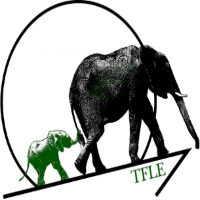

Education

University of Calgary
Bachelor of Science - Major in Computer Science (Minor in Data Science) 2016-2019
Bachelor of Science - Major in Geophysics 2011-2016
Work Experience
Devon Energy
Fortune 500 oil and gas company with a focus on technology and innovation
IT Business Analyst Intern
- Enabled leaders at Devon to make impactful business decisions by using SQL queries to extract data from multiple databases and subsequently generating Power BI business intelligence reports to present insights
- Architected data services by understanding the complex databases of third party applications used by Devon
- Gathered requirements by interviewing SAP BusinessObjects users from various discipline groups to find alternative ways to automate repetitive tasks and generate reports with higher usability, portability, and scalability
Research Experience
University of Calgary
Research Assistant
- Performed data cleaning on user reviews and ratings obtained from Google Play to conduct advanced data analytics using natural language processing(NLP) technique
- Reviewed over 20 published requirements engineering articles to write the related works section to convince the research review committee about the novelty of the research and its contribution to requirements engineering
Publications
Co-author of "Learn More, Pay Less! Lessons learned from Applying the Wizard-of-Oz technique for Exploring Mobile App Requirements" published in IEEE International Requirements Engineering Conference Workshops
Projects

Recruiter Web App

Webdevelopment

Medical Institute Consulting

Presented to at risk junior high school students about the experiences of a varsity student-athlete and highlighted the
associated benefits in order to encourage post-secondary aspirations. We also worked with the Rotary Club of Calgary to
developed a centralized system for Rotary Club of Calgary’s administrative team to increase efficiency.
TwentyFirst Leadership Education